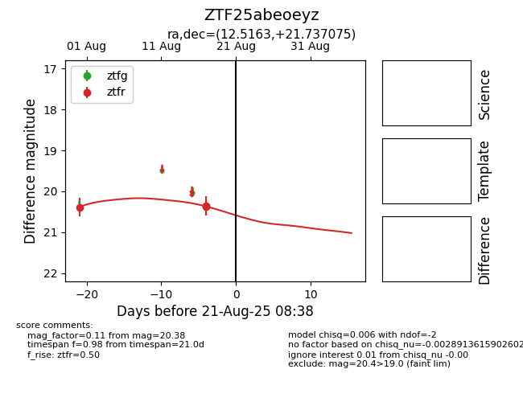

Target ZTF25abeoeyz at 2025-08-21 08:38, see:
FINK: fink-portal.org/ZTF25abeoeyz
Lasair: lasair-ztf.lsst.ac.uk/objects/ZTF25abeoeyz
ALeRCE: alerce.online/object/ZTF25abeoeyz
alt names
ZTF25abeoeyz (ztf,alerce)
coordinates:
equatorial (ra, dec) = (12.5163,+21.73707)
galactic (l, b) = (122.5087,-41.13355)
photometry
last ztfr=20.38
3 ztfr detections
